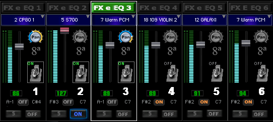
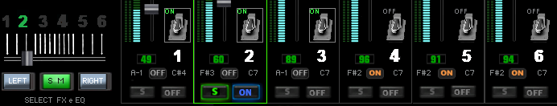
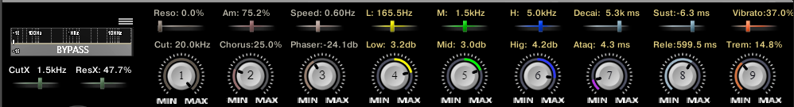
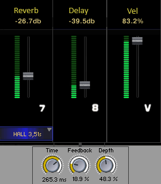
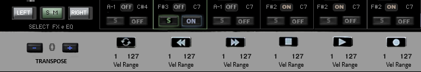
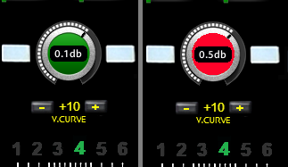

Características e Controles do "Toca Sample"
Embora o "Toca Sample" venha com 6 canais, não é recomendável usar todos ao mesmo tempo, pois, dependendo do seu equipamento, o consumo de CPU pode ficar elevado. A ideia de ter 6 canais é permitir que você tenha um timbre pronto para a música seguinte, o que é conveniente para quem toca ao vivo. Cada canal possui um menu para escolher entre os 20 timbres de samples importados por você.
Na imagem acima, vemos os controles de volume, que acendem ao atingir o máximo, e o controle de balanço (Pan). Há também o botão para ligar e desligar o canal em ON. Clicando no pedal, você liga e desliga o pedal; este acende quando ativo e é acionado ao pisar nele. Acima desses, temos o ajuste de oitavas, “8ª”. Observe que alguns controles, na posição inicial, ficam sem cor. Abaixo dos pedais, há um controle em forma de cifras numeradas (A-1) que seleciona as notas que definem o início da atuação das teclas no teclado e outro (C-7) que seleciona as notas que definem o fim da atuação. Entre esses controles, temos o botão ON, que habilita ou desabilita a função, fazendo com que o canal atue ou não em todas as teclas do teclado.
Na figura acima, à esquerda, vemos o seletor de 6 canais, um controle deslizante horizontal (seletor) que permite escolher o canal para ajustar os demais controles de EQ e FX. Os knobs “Left” e “Right” atuam da mesma forma que o deslizante horizontal, mas nas respectivas direções.
O knob central, “SM” (Solo Memória), quando ativado, acende em verde, e a linha que contorna o canal selecionado muda de branco para verde. Ele serve para silenciar os outros canais, permitindo que você isole um canal por vez e os selecione um a um com o deslizante (seletor) acima. Ao desligar o “SM”, os canais retornam ao estado anterior. Os knobs “S” (Solo) em cada canal permitem solar mais de um canal simultaneamente. Dica: em vez de desligar o solo, pressione duas vezes o “SM” para restaurar os canais ao estado anterior ao solo.
Observação: Todos os controles podem ser mapeados no seu controlador, com exceção do “Vel Range”, que será explicado mais adiante. Ao apontar o mouse para qualquer controle, o rodapé do Kontakt exibirá uma breve descrição. Segurando a tecla Ctrl e clicando no controle, ele retorna à posição padrão.

Na imagem acima, encontramos os filtros e efeitos FX/EQ. À esquerda, há um menu para selecionar um dos 31 filtros disponíveis, como LP (Low Pass), que corta frequências altas, e HP (High Pass), que corta frequências baixas. Abaixo destes, temos “CutX”, que define o ponto de corte da frequência, e “ResoX”, que ajusta a intensidade ressonância do ponto de corte de CutX. Em seguida, temos “Cut” e “Reso”, que atuam de forma semelhante aos anteriores, mas aplicados a um filtro único (SV LP 2). Mais à direita, encontramos o “Chorus”, que ajusta a profundidade do efeito, e “Amount”, que controla o quanto do efeito é misturado com o som original. Seguindo, temos os controles de “Phaser” e “Speed”, que ajustam a profundidade e a velocidade do efeito Phaser, respectivamente.
Em amarelo, vemos o controle de “Low” (graves), e acima dele, o controle “L” ajusta a frequência de atuação do controle "LOW" (graves). O mesmo se aplica a “Mid” (médios), em verde, e “High” (agudos), em azul. Em seguida, temos o ADSR (Ataque, Decaimento, Sustentação e Liberação), com “ATA” (Ataque) em lilás e os demais controles em cinza. Por fim, encontramos os efeitos “Trem” (Tremolo) e “Vibrat” (Vibrato), ambos em laranja, que também podem ser atribuídos à roda de modulação, juntamente com os controles de corte e ressonância.
As cores e a proximidade dos controles ajudam a correlacionar suas funções. Todos os ajustes se aplicam ao canal ou à memória selecionada, lembrando a posição dos controles para cada um deles.
No canto inferior direito, temos os controles de “Reverb” e, abaixo deste, um menu para selecionar o tipo de reverb. Ao lado direito, temos o “Delay” (eco) e seus respectivos ajustes: “Time” (tempo entre repetições), “Feedback” (quantidade de repetições) e “Depth” (intensidade da modulação). Por fim, temos o controle de “Vel” (Velocidade de toque), que ajusta a sensibilidade das teclas do canal. Quanto mais elevado o valor, maior a sensibilidade e menor o volume. Cuidado,ao reduzir a sensibilidade, o volume aumenta, o que pode causar distorções. Baixar a sensibilidade e diminuir o volume é interessante para ajustar a curva de resposta em sons de PADs...
Na imagem acima, à esquerda, vemos o controle de “Transpose”, que ajusta a afinação em até 12 semitons acima e abaixo. À direita, temos o “Vel Range”, com dois controles de números que definem a faixa de velocidade em que o canal toca. O primeiro valor determina a velocidade mínima, e o segundo, a velocidade máxima. Isso permite, por exemplo, que um instrumento toque apenas quando as teclas são pressionadas suavemente ou fortemente. Acima desses controles, vemos um desenho de referência do meu mini controlador, utilizado para iniciar este projeto, deixei eles para servirem de referencia posicional, para mim e para que também tem um controlador.
Por fim, temos o controle de volume geral, que alerta quando o nível ultrapassa 0,2dB. Também há o controle “V.CURVE” (Curva de Velocidade), que aplica o mesmo princípio do controle “Vel” por canal, mas este de forma global, ajustando a curva de resposta de todo o teclado. O range vai de -50 a +50, e nesta imagem, está ajustado em +10 para o meu teclado, cada teclado tem sua curva especifica.
Exportando Samples